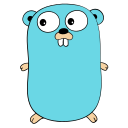

devacancy
$ candidatar --todo-dia
Pare de caçar vaga de programador.
A gente se candidata por você.
Você não precisa mais procurar em
LinkedIn
GitHub
Sites de vaga
Vagas filtradas pela sua stackfront · back · mobile · dados





Front-end PlenoReact · TypeScript · Remoto
✓ Enviada
Back-end SêniorNode.js · AWS · Híbrido
✓ Enviada
Engenheiro(a) de DadosPython · SQL · Remoto
✓ Enviada
Você manda o perfil uma vez. A equipe se candidata todo dia.
Enviar meu perfil